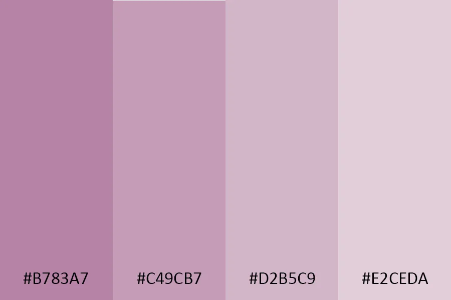
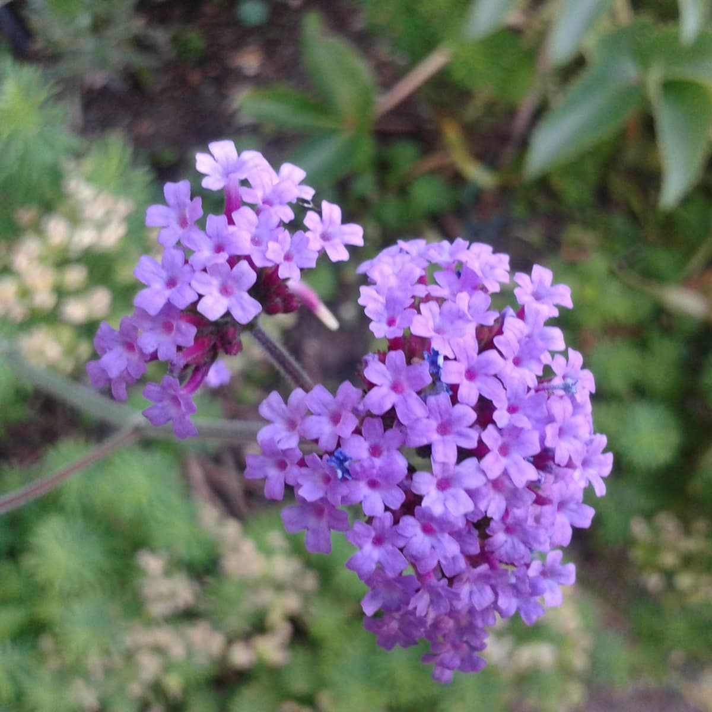
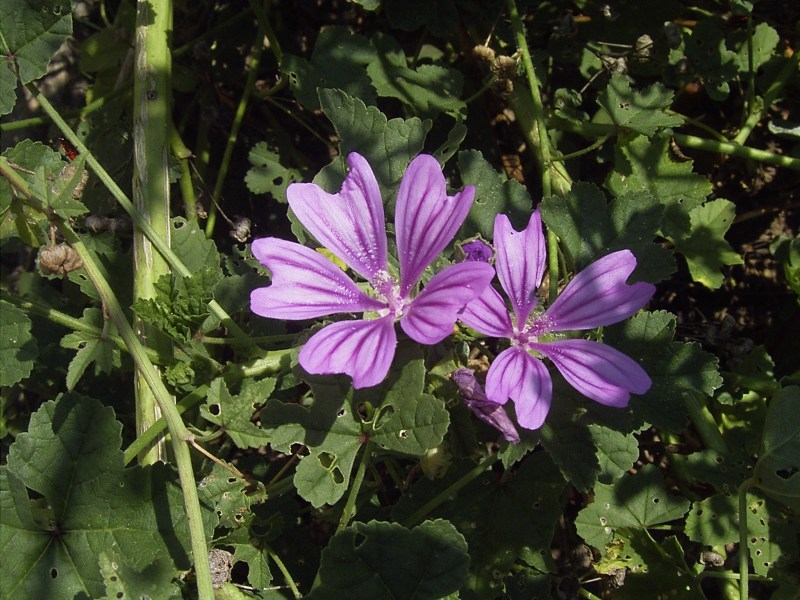
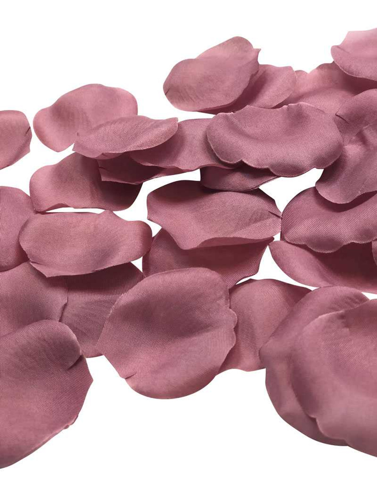
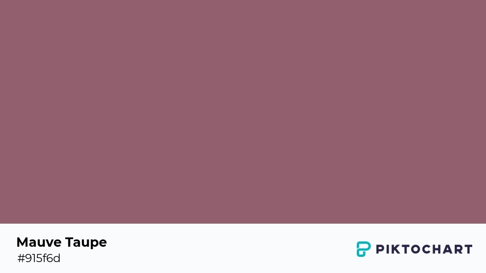
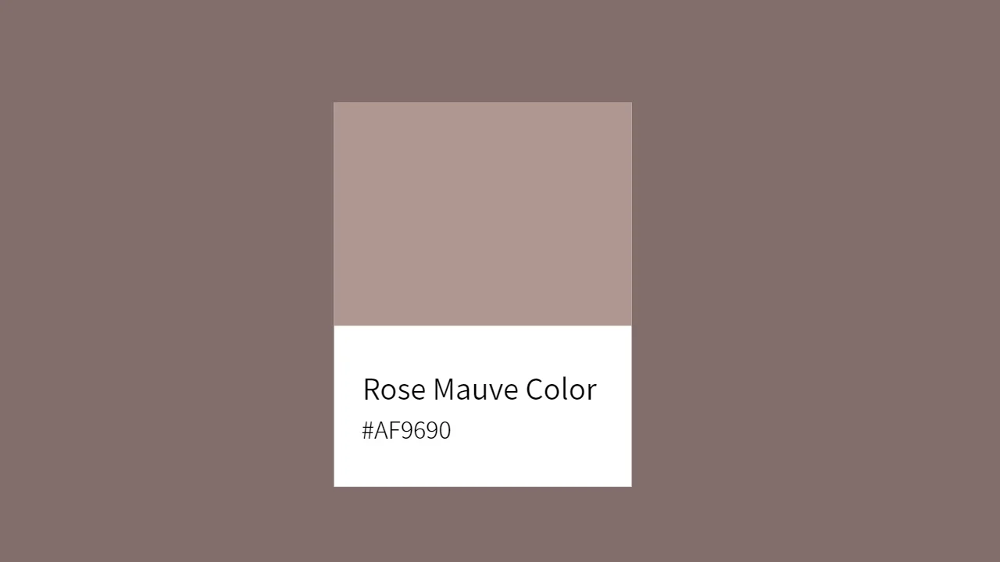
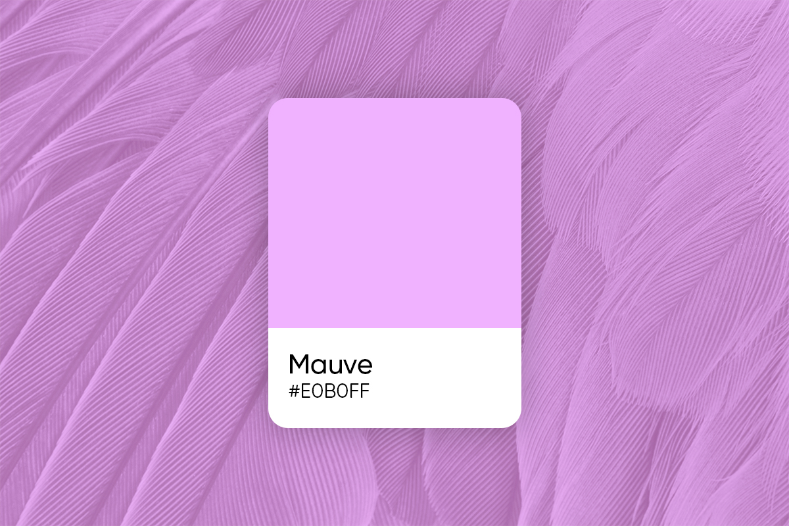

Mauve Gallery
Google search for mauve images Perkin’s discovery had an ineffable impact on the world we see around us. The bright colors of painted billboards and patterned scarves are all but synonymous with modernity. As Nicholas Gaskill puts in his 2018 book Chromographia: American Literature and the Modernization of Color, “The shock of modern life required the brilliance of aniline.” The sheer range and intensity of artificially manufactured color embodied the oversaturation of budding mass consumer culture.







